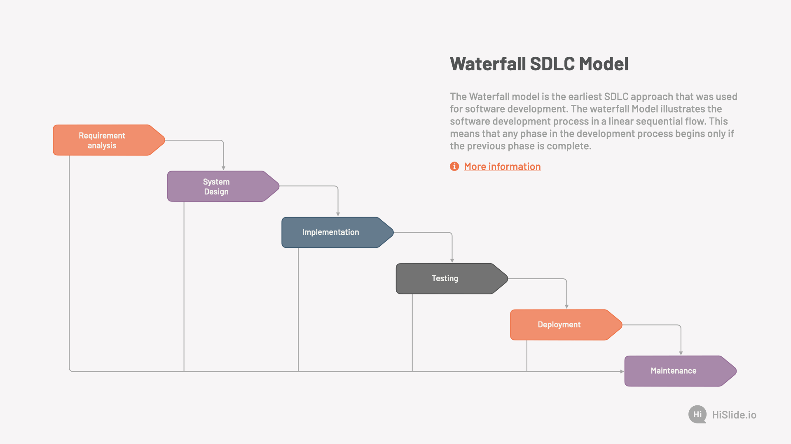

Waterfall
Waterfall on üks esimesi tarkvara arenduse mudele
tavaliste tootmisprotsesside eeskujul, kus iga etapp eelneb järgmisele.
Tagasi pöördumine eelmisesse etappi on keeruline. Eelnevas etapis vea avastamine, tähendab seda, et
vea juurde saab tagasi pöörduda alles siis, kui tarkvara on kasutusse läinud.
-
Etapp - Nõuete määratlemine:
Selles etapis dokumenteeritakse arendatava toote/tarkvara/süsteemi nõuded,
käitumine, sihtriistvara jms, mis on arendatava tarkvara taatlusliku funktsioneerimise tarbeks vajalikud.
Vahest jagatakse see etapp ka omakorda kaheks - Süsteemianalüüs ja Nõuete analüüs.
-
Etapp - Süsteemi ja tarkvara kavandamine:
Teises etapis kavandatakse arenduses olev süüstem ja tarkvara keskenduses nende põhilistele omadustele.
Põhi omadusteks võivad olla: Andmestruktuurid, tarkvara arhitektuur, liidesed, liideste omadused,
ning protseduurilised ja algoritmilised detailid. kavandamise tulemused dokumenteeritakse,
mille abil hinnatakse teostuse käigus projekti kvaliteet.
-
Etapp - Teostus ning moodulite testimine:
Eelnevalt dokumenteeritud kavandi järgi toimub kolmandas etapis tarkvara/süsteemi arendus.
Arendustöö käigus arendatakse programm moodulhaaval, või moodulite kogumikuna.
Peale programmeerimist, teostatakse, moodulite ja kogumite tesimised. Olenevalt eelnevelt dokumenteeritud
kavandi detailsusest, tuleneb selles etapis projekti arenduslihtsus.
Mida rohkem detaile on kavandatud, seda lihtsalt on arendustöö.
-
Etapp - Integratsioon ja süsteemi testimine:
Toimub kogu tarkvarasüsteemi testimine. Peale testimist tarnitakse toode kliendile või
kasutajate sihtrühmale. Testitakse sellest vaatepunkist kas süsteem teeb seda mis eelnevalt dokumenteeritud,
ning testitatakse ka seda, et süsteemis esinevad detailid on loogilised.
-
Etapp - Kasutamine ja hooldus:
Kõige pikem tarkvara elutsüklis olev etapp, siin toimub vigade parandus, funktsionaalsuse muutmine,
(kas siis kliendi, turu, keskkonna, või sihtrühma sisendi/vajadusena), arendustöö
koostamiseks korratakse kõiki eelmise etappe, kuid siis ainult süsteemi muutmise eesmärgil, mitte enam
nullist millegi uue arendamise jaoks.
Iga etapi tulemusena tekib dokument (kas siis üks või mitu), mis kirjeldab etapis saavutatud tulemit.
Kõik dokumendid kinnitatakse. Järgmine etapp ei tohi olla samaaegselt töös kui eelmine pole lõpetatud.
Kuigi mingi ülekate siiski on, ning infot on võimalik edastada ühest etapist edasi teise.

| Flaws |
Strengths |
| Mitte paindlik |
Kindlad nõuded |
| Mis sa tahad alguses, on mis sa saad lõpus |
Lihtne hallata |
allikad:
EUCIP